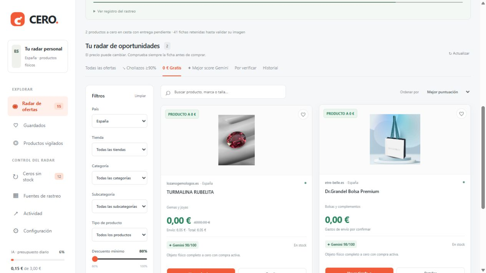

CÓDIGO ABIERTO · TU PROPIO RADAR
Si el precio se rompe,
que no se te escape.
CERO busca productos físicos a 0 € y descuentos desde el 80 %. Cruza tiendas, catálogos y búsquedas; comprueba las fichas y usa Gemini para ordenar lo que merece atención. Lo instalas en tu ordenador, eliges tus tiendas y controlas el gasto.

Un cero no basta. Puede ser el carrito vacío, una variante retirada o un precio interno. CERO distingue esos indicios de una ficha comprable y de un cero mantenido en cesta. Los gastos de envío se muestran por separado.
01. Qué hemos comprobado
En las pruebas del 24 de octubre, estos productos se mantuvieron a cero al añadir una unidad, por separado, a una cesta anónima. No son muestras ni descargas.
| Producto | Comprobación |
|---|---|
| Turmalina rubelita · Lozano Gemólogos | Producto 0 €. La cesta mostraba 6,05 € de gastos con impuestos, todavía sin seleccionar destino. |
| Bolsa física Dr.Grandel · être belle | Producto 0 € en cesta. El carrito declara que requiere envío físico; gastos pendientes de confirmar. |
| Frutas sorpresa unidad · ComeFruta | Una unidad a 0 € comprobada hasta el paso previo al pago, sin otro artículo ni suscripción. Envío de prueba CTT: 5,84 € para CP 28001 (Madrid); puede variar por destino y fecha. |
Son observaciones fechadas, no ofertas permanentes ni pedidos entregados. La aceptación final depende del comercio. La bolsa es una bolsa de papel completa: no se presenta como un artículo de gran valor.
También encontramos ceros que no sirven: una variante de Origins bloqueada para pedidos y productos de Cuatro Rayas con la compra oculta. Quedan fuera de los chollos confirmados.
02. Instalar y abrir el panel
Necesitas Python 3.12 o superior, conexión y una carpeta para el proyecto. Descarga el ZIP de GitHub o, si tienes Git, pega lo siguiente en una terminal de Windows:
git clone https://github.com/iaquetrabaja/cero-radar.git
cd cero-radar
python -m venv .venv
.venv\Scripts\python -m pip install -r requirements.txt
Copy-Item .env.example .env
.venv\Scripts\python configure.py --country ESAbre el archivo .env con un editor y configura tu clave si quieres utilizar Gemini. Después inicia el panel:
.venv\Scripts\python run.pyEntra en http://127.0.0.1:8765/. Es la dirección de tu ordenador: funciona cuando has iniciado CERO. No necesitas activar el entorno ni cambiar las políticas de PowerShell.
En Linux o macOS usa .venv/bin/python en lugar de .venv\Scripts\python y cp .env.example .env para copiar la configuración.
03. Gemini económico y gasto controlado
Consigue tu propia clave en Google AI Studio. No la compartas ni la subas a GitHub. En tu .env:
GEMINI_API_KEY=TU_CLAVE
GEMINI_DAILY_BUDGET_EUR=3
BUDGET_TIMEZONE=Europe/MadridEl modelo es Gemini 2.5 Flash-Lite. Agrupa análisis, reutiliza resultados y filtra antes de llamar a la IA. El límite se reserva antes de cada llamada y se reinicia a medianoche de la zona indicada. Puedes reducirlo: es un máximo, no un objetivo de gasto.
Al llegar al límite, continúa el rastreo con puntuaciones por reglas hasta el siguiente día. La cifra es una estimación conservadora; comprueba la facturación en tu cuenta y la tarifa de Google. Sin clave también funciona el buscador.
04. Tu país, tus tiendas
España incluye un catálogo inicial de más de 1.300 dominios. El contador de tiendas analizadas empieza en cero y sube cuando se leen de verdad: no es lo mismo registrar una web que verificar una compra.
Antes del primer arranque puedes elegir ES, PT, FR, DE, IT, GB, US o MX. Por ejemplo:
.venv\Scripts\python configure.py --country FR --store "Mi tienda|https://mitienda.fr/"Los otros países son perfiles configurables; la cobertura y las pruebas principales son de España. Añade tus comercios y comprueba sus resultados. La configuración está en config/market.local.json. Para otro país con datos existentes utiliza otra carpeta de instalación, sin mezclar las bases.
En el panel, entra en Fuentes de rastreo → Añadir una tienda. Escribe su nombre y web. Se revisará en las siguientes pasadas y verás si publica precios, qué plataforma utiliza y si hay errores.
05. Filtrar y entender lo que ves
- 0 €: producto a cero; puede tener portes. Si no conocemos los gastos, se indica.
- Chollazos: rebajas desde el 90 %. El radar general exige al menos un 80 %.
- Gemini: valoración de las evidencias, no garantía de entrega.
- Por verificar: indicios con lectura insuficiente o condiciones que revisar.
- Ceros sin stock: fichas reales a cero agotadas, visibles también en el radar con prioridad menor y revisadas cada 12 horas. Si reaparecen, se comprueba que sigan a cero y con compra activa.
- Historial: cambios, enlaces retirados y ofertas que terminaron.
Filtra por tienda, categoría, subcategoría, tipo, disponibilidad y precio. Calas y sillines están en Deporte → Ciclismo, con tipos separados. Cada producto visible necesita una foto real validada. Una referencia tachada sospechosa se deja pendiente de contraste: no se confunde PVP con historial independiente.
Una oferta interesante se conserva aunque falle la lectura o termine la rebaja. Se muestra su estado y su mejor precio observado. La prioridad de un cero físico comprobado en cesta es al menos 96; sin stock, 60. Si esta regla corrige la nota de la IA, aparece como Prioridad, sin atribuir a Gemini una puntuación que no dio.
06. Que siga buscando
La programación encadena exploraciones con una pausa de 60 segundos, vigila productos cada 15 minutos y hace una pasada profunda diaria. Rota consultas y tiendas. Los errores no detienen las demás fuentes.
En Windows puedes instalar el arranque al iniciar sesión y un supervisor que reinicia el servicio si el proceso termina:
.venv\Scripts\python scripts/install_startup.py
.venv\Scripts\python scripts/supervisor.pyEl ordenador debe estar encendido, conectado y sin suspensión. Para que funcione con el PC apagado necesitas un servidor. Mantén el panel privado; está pensado para acceso local.
Detener conserva resultados y pausa la programación. Reactívala en Configuración. Para quitar el inicio automático elimina CERO Radar.vbs de la carpeta de Inicio de Windows.
07. Tu seguimiento de Amazon
Añade tu propio identificador de afiliado en .env:
AMAZON_ASSOCIATE_TAG=TU_IDLos enlaces de salida lo incluyen; las URLs internas se guardan limpias para no duplicar productos. Déjalo vacío si no quieres afiliación. La interfaz identifica estos enlaces.
08. Telegram, preparado para después
La integración está desactivada y sin opciones en el panel. Ya hay una bandeja local y envío con foto, precio y enlace. No hemos creado ni anunciado un canal de avisos activo.
Cuando quieras activar tu propio destino, configura tu bot, chat y TELEGRAM_ENABLED=true. El README explica cómo revisar la bandeja sin enviar y cómo activar el envío. Los avisos se comprueban de nuevo para evitar mandar ofertas caducadas.
09. Si algo no funciona
- No abre localhost: inicia
run.pyy conserva el servicio en ejecución. - No aparecen ofertas: espera a una pasada, limpia filtros y consulta Fuentes. No se rellenan resultados inventados.
- La tienda sale bloqueada: se pausa y se revisa después; el resto sigue buscando.
- Una oferta ya no existe: revisa fecha y estado. Un 404 no debe presentarse como producto agotado.
- Gemini no responde: revisa clave y presupuesto. El buscador mantiene sus fuentes gratuitas.
- Quieres comprobar la instalación: ejecuta
.venv\Scripts\python -m unittest test_cero -q.
CERO utiliza Scrapling y adaptadores propios. No cubre todo Internet ni garantiza encontrar errores cada día. Última actualización de esta guía: 24 de octubre de 2026.